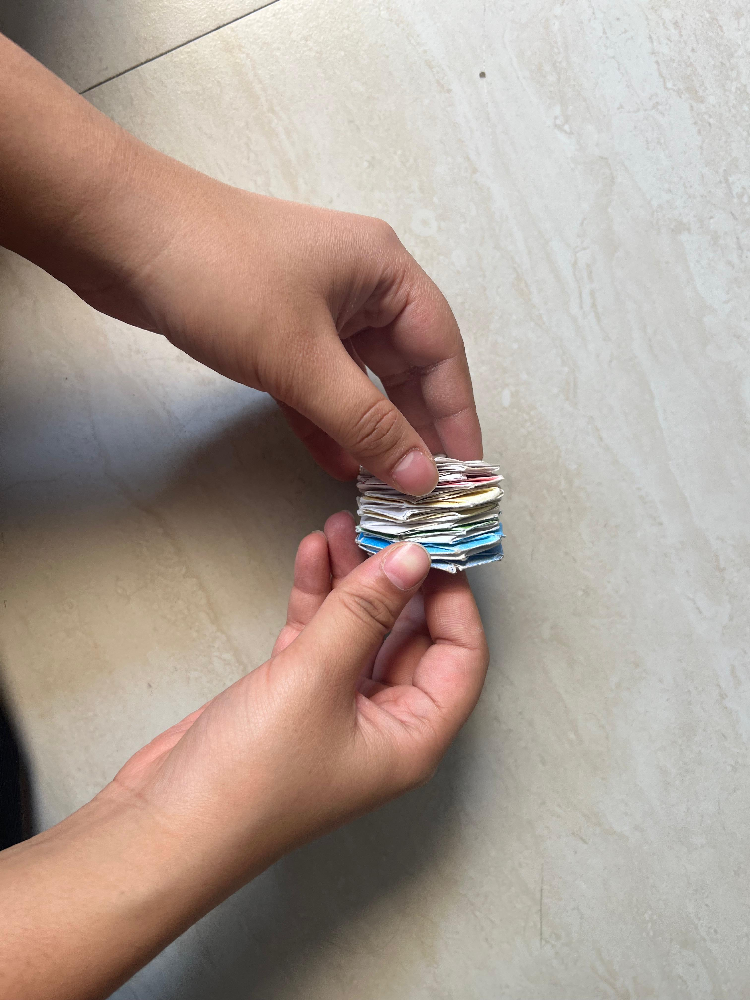
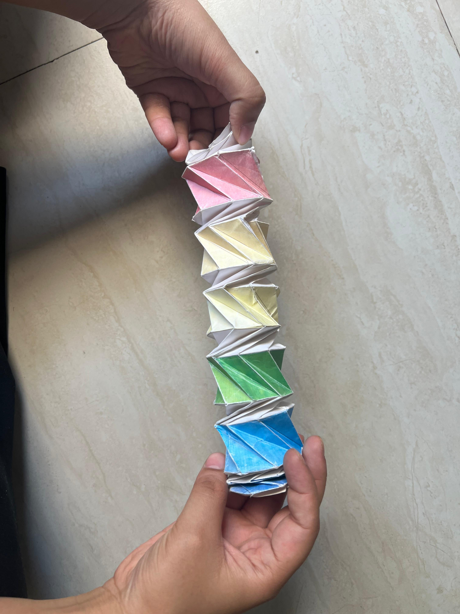
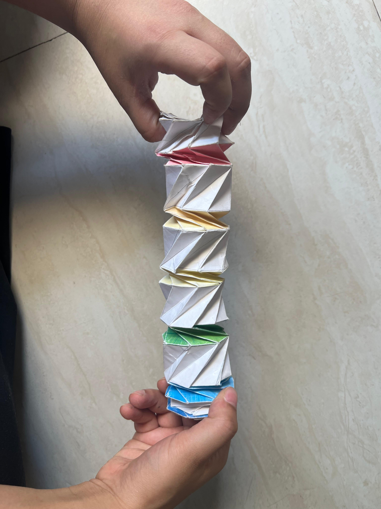

Origami
Pako Pako

About This Piece
This is a transformable origami model designed by Tomoko Fuse. I followed Jeremy Shafer’s template to make it. I love this model because it reminds me of the immense applications origami has in deployable structures. How cool is it that this model can in one configuration barely take up any space and in the other open up like a tube!


